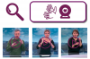

Moteur de Recherche en Langue des Signes par Sentence Embeddings¶
{kind=link}
Coline Petit-Jean (M2, ENS-Lyon),
Michèle Gouiffès (LISN, Université Paris-Saclay),
Hannah Bull (LISN, Université Paris-Saclay),
Expertise IT : Emmanuel Quémener (CBP, ENS-Lyon)
La recherche sur le traitement automatique des langues des signes (LS) est loin derrière la recherche sur les langues vocales. Des outils qui existent depuis des années pour le français — comme des moteurs de recherche, la traduction automatique et même des dictionnaires — sont dans un stade préliminaire pour la LSF.
Nous souhaitons créer un moteur de recherche visuel qui permette de signer une phrase devant une webcam/caméra et de trouver des extraits de vidéo en LS qui y correspondent. Il existe déjà des méthodes de ”one-shot sign detection”, c’est-à-dire de trouver des extraits de vidéo qui contiennent un signe à partir d’un seul exemple. Nous souhaitons adapter ces méthodes pour pouvoir chercher non seulement un signe mais aussi une phrase. Une piste de travail est d’entraı̂ner un modèle pour apprendre des sentence embeddings pour la LS. Avec ces sentence embeddings, nous pourrions définir une distance entre deux segments de vidéo de LS.
A terme, l’algorithme conçu sera intégré dans l’outil d’aide à la traduction développé au LISN, qui est un concordancier bilingue. Cet outil ne fonctionne actuellement que dans un sens de traduction : du français vers la LSF. La requête est donnée en français, le logiciel explore la base dedonnées d’alignements pour trouver une ou plusieurs correspondances. Si c’est le cas, il affiche d’une part les segments de texte en contexte contenant la requête, en regard des extraits vidéos qui en sont les exactes traductions. L’objectif est de le rendre fonctionnel dans l’autre sens. Le signe réalisé par l’utilisateur en face de sa webcam servira de requête pour chercher d’autres occurrences similaires des phrases, réalisé dans d’autres contextes, à isoler au travers de plusieurs centaines de vidéos.
Contribution du CBP¶
Le Centre Blaise Pascal met à disposition toute son infrastructure sur GPU pour permettre la réalisation des apprentissages profonds du projet.